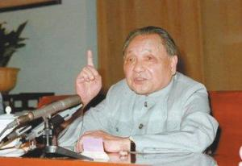
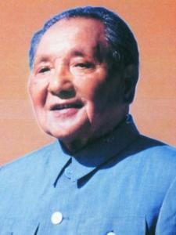

After the founding of New China, Deng Xiaoping led the political power construction, social transformation and economic recovery in the southwest region. He soon took part in the leadership of the Central Committee and served successively as the Secretary General of the CPC Central Committee and a member of the Political Bureau of the CPC Central Committee. At the First Plenary Session of the Eighth Central Committee of the Communist Party of China, he was elected as a member of the Standing Committee of the Political Bureau of the CPC Central Committee and general secretary of the Secretariat of the CPC Central Committee. He became an important member of the Party's first generation of central leadership with Mao Zedong at the core and made significant contributions to the strengthening and improvement of the Party's construction. "After the Cultural Revolution, he served as vice-chairman of the CPC Central Committee, vice-premier of the State Council of the People's Republic of China, vice-chairman of the Central Military Commission of the CPC and chief of staff of the Chinese People's Liberation Army, presiding over the daily work of the Party, the state and the army. Soon after, due to the tit-for-tat struggle with the Gang of Four, he was wrongly dismissed and criticized again.
set things rightafter the downfall of the gang of four and the end of the "cultural revolution", Deng Xiaoping resumed his work and began to rectify the situation by correcting his ideological line. he stressed that seeking truth from facts is the essence of Mao Zedong thought, clearly opposed the erroneous view of the "two whatevers" and supported and led the discussion on the criterion of truth. The Third Plenary Session of the 11th CPC Central Committee, held in December 1978, opened a new era of China's reform and opening-up and concentrated efforts on socialist modernization.
Deng Xiaoping made a report on "emancipating the mind, seeking truth from facts, uniting and looking forward", stressing that emancipating the mind is a major political issue. it is necessary to break Lin Biao and the gang of four's ban and ban, create a rigid state of superstition, and liberate people's thoughts from the shackles of pseudo-Marxism.
for the first time, he put forward the view that "in order to protect people's democracy, the legal system must be strengthened, democracy must be institutionalized and legalized, so that the system and the law will not change with the change of leaders or with the change of leaders' views and attention". he put forward the view that some regions, some enterprises, some workers and peasants should be allowed to become rich first, so as to drive other regions, other enterprises and others, and make the people of the whole country richer faster.
under Deng Xiaoping's leadership, the third plenary session of the 11th central Committee abandoned the erroneous line of "taking class struggle as the key link" and decided on the political line in which the focus of the work of the whole party and the attention of the people of the whole country were shifted to the socialist modernization construction. the economic management system and management methods should be seriously reformed, and the phenomena of party-government separation, government-enterprise separation, party-government substitution, and government-enterprise substitution should be seriously solved, with a hierarchical division of labor and responsibility.
reform and opening up After the Third Plenary Session of the 11th CPC Central Committee, he insisted on emancipating his mind, seeking truth from facts, and founded and developed the theory of building socialism with Chinese characteristics. This theory scientifically clarifies the essence of socialism and, for the first time, systematically answers a series of basic questions about how to build socialism and how to consolidate and develop socialism in a country with backward economy and culture like China. He believes that China is in the primary stage of socialism and all plans should be drawn up from this reality. According to his thoughts, the 13th National Congress of the Communist Party of China formulated the Party's economic construction as the center in the primary stage of socialism, adhering to the Four Cardinal Principles and the basic line of reform and opening up. He pointed out that the fundamental task of socialism is to develop productive forces. The whole Party must devote itself wholeheartedly to modernization. The key to realizing modernization is the modernization of science and technology. Science and technology are the first productive forces. Education is the most fundamental cause of a nation. He designed the development strategic goal of basically realizing modernization in three steps from the 1980s to the middle of the next century. He also pointed out that all the basic criteria should be whether it is conducive to the development of the productive forces of the socialist society, whether it is conducive to the enhancement of the overall national strength of the socialist country, and whether it is conducive to the improvement of the people's living standards, so as to continuously open up new situations. He strongly supported and promoted the rural reform and pushed forward the city-centered comprehensive reform, pointing out that "reform is China's second revolution". His statement that socialism can also develop a market economy has laid a theoretical foundation for the Communist Party of China to set the reform goal of establishing a socialist market economy system. He advocated the establishment of special economic zones, the opening up of 14 coastal cities, the development and opening up of Pudong New Area in Shanghai, and the formation of China's overall opening-up pattern. He actively pushed forward the reform of the political system, emphasized the development of socialist democracy, improved the socialist legal system, and attached great importance to the construction of spiritual civilization while building material civilization.
one country, two systems He devoted a great deal of painstaking efforts to solve the Hong Kong, Macao and Taiwan issues and realize the peaceful reunification of the motherland. He creatively put forward the idea of "one China, two systems" from the reality. Under his leadership, China has established diplomatic relations with the United States, concluded a Sino-Japanese peace and friendship treaty with Japan, restored relations between the two parties and countries in China and the Soviet Union, and developed friendly relations with neighboring countries and third world countries. He made unremitting efforts to open up a new situation in China's diplomacy, strive for a favorable international environment for modernization and safeguard world peace.
take the lead in retirementat the 5th plenary session of the 13th CPC central Committee in November 1989, he resigned as the last chairman of the central military Commission. He played a key role in the smooth transition from the second generation of central collective leadership with him at the core to the third generation of central collective leadership with Jiang Zemin at the core and in maintaining the stability of the party and the country.
southern speechafter retirement, he still cares about the cause of the party and the country. In 1992, he visited Wuchang, Shenzhen, Zhuhai, Shanghai and other places in southern China, made important speeches, summarized the basic experience since the reform and opening up, and answered some important questions in theory. China's reform, opening up and modernization have entered a new stage.
character theorythe 15th national congress of the communist party of China held in 1997 summed up the theory of building socialism with Chinese characteristics as Deng Xiaoping theory, pointing out that Deng Xiaoping theory is Marxism in contemporary China and a new stage in the development of Marxism in China. it is clearly stipulated in the party constitution that the communist party of China takes Marxism-leninism, Mao Zedong thought and Deng Xiaoping theory as guidelines for action.
Deng Xiaoping theory is the product of the combination of the basic principles of Marxism with the practice of contemporary China and the characteristics of the times. it is the inheritance and development of Mao Zedong thought under the new historical conditions. Deng Xiaoping's theory has formed a series of interrelated basic views on the basic theoretical issues of what socialism is and how to build socialism. It has for the first time systematically and preliminarily answered a series of basic questions about how to build, consolidate and develop socialism in China's economically and culturally backward countries on such major issues as the socialist development path, development stage, basic tasks, development power, external conditions, political guarantee, strategic steps, leadership and reliance, and the reunification of the motherland.